更新日:
2024年10月9日更新↓
恥ずかしい未完成で中途半端な私の装備構成を
ありがたいことに皆さん見たいと言ってくださるので記事にしたいと思います！
めっちゃ恥ずかしい
OPも中途半端ですし、極めたらまだまだ改善するとこたくさんあります。
ダメージも攻撃速度も強化も弱化も
計算もしてないので計算してくださった方はおしえてね⭐️
⭐️⭐️⭐️⭐️⭐️⭐️困ってる獣人に届けー⭐️⭐️⭐️⭐️⭐️⭐️
まずダメージ具合はこんな感じです。
フォローしてね👍獣人2パンｷﾀ━━━━(ﾟ∀ﾟ)━━━━!! pic.twitter.com/eJfhfamFsr
— どくりんご (@rs_dokuringo) October 7, 2024
ステータスはこんな感じ。
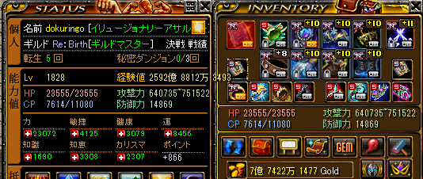
力を2万超えるように調整しました！
物理改変で装備変えたとこは指だけなので下の記事と被ってしまうのですが見たいよーの人の為にもう一度書きます！
【恩寵の】と【勇気1段】にしてます
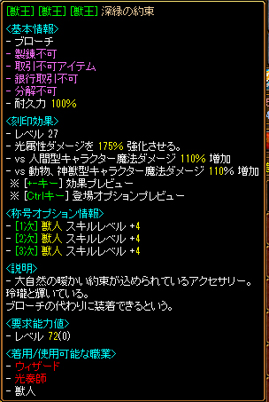
ウポ補助は機能してるのは 【光強化】のみですね！
これは変更予定で、種族ダメージに変換中です。
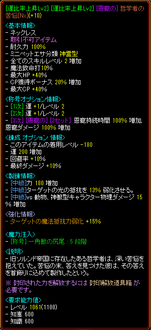
首は【哲学者】を使ってます。
精錬の3op目を変えるのも忘れずに!!
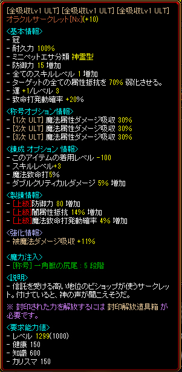
頭は【オラクルサークレット】です。
普通ですね！！
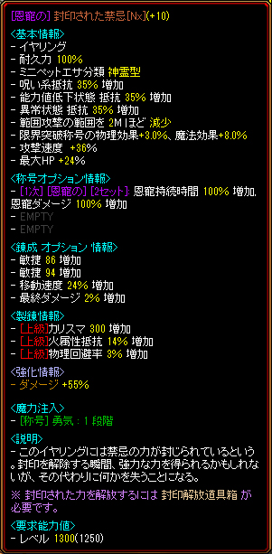
耳が【封印された禁忌】を使ってます。
限界突破称号の物理効果と魔法効果が美味しいです！
範囲が2M減少するのでそこは残念ポイントです。
もっと残念なのがOPですけど、そこは見なかったことにしてください💋
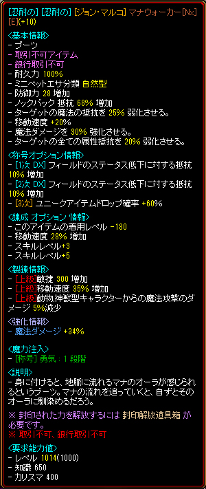
足は【マナウォーカー】を使ってます。
【ファーストステップ】も気になりますが、計算だるいのでいいや
こちらも残念OP。エステル欲しいです！！
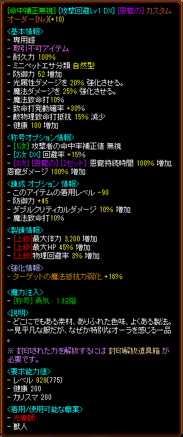
鎧は【カスタムオーダー】を使ってます。
王道装備です！
回避以外つけるものは思いつかないからこのままでいいやゾーンです
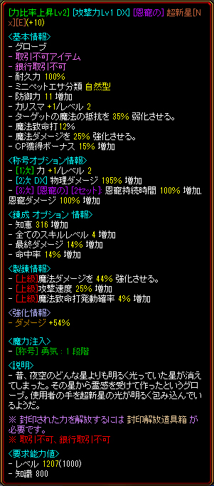
グローブは【超新星】を使ってます。
これも配られた装備1250UMUなのでOPが残念ですが
このままでいいやゾーンです
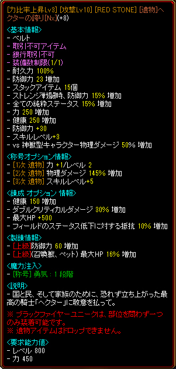
ベルトは【ヘクター】を使ってます。
＋8だし😇
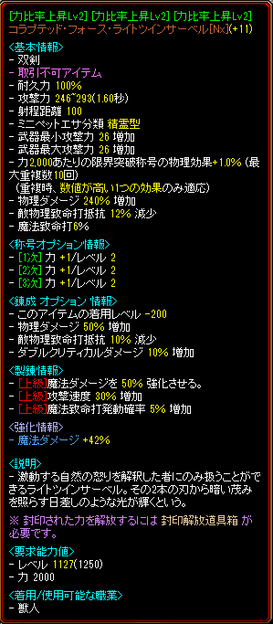
武器は【コラブテッド・フォース・ライトツインサーベル 】を使ってます。
異次元とか下手なのでやりません。
限界突破称号が美味しいです
やっぱり強いですよねこの武器!!
指達
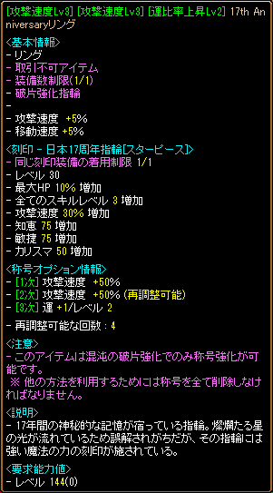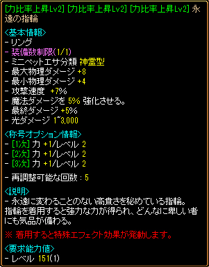
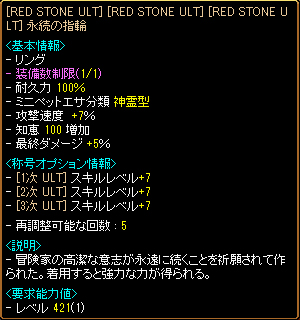
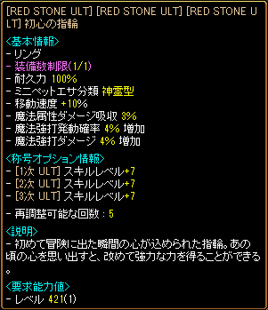
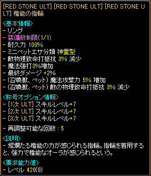
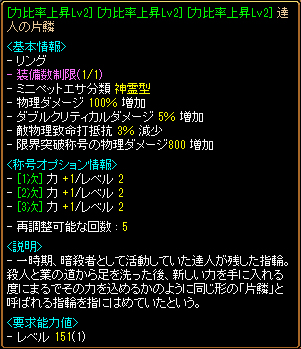
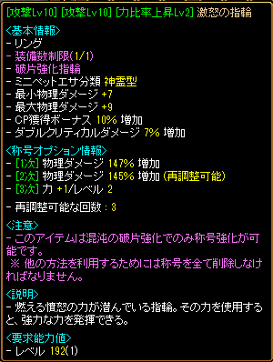
表記
アンビートの表記はこんな感じです！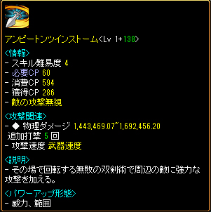
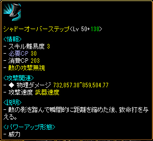
クレスト
改変に向けて準備しました。この紫クレストは大きいと思いました。
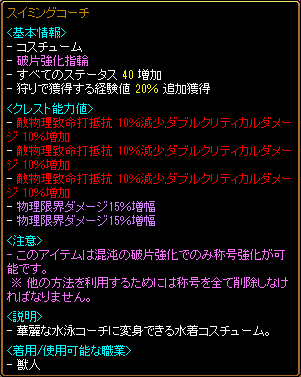
ミニペット
たまたま譲っていただいたミニペット達この子達の存在はかなり大きいと思います！
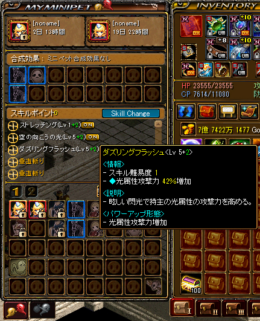
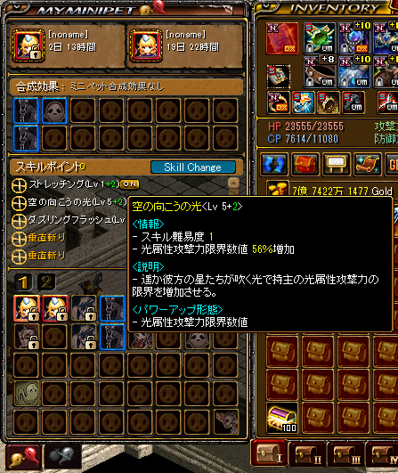
クリーチャー
ああ・・・恥ずかしい!!!!!!!!!!!!!中途半端過ぎて見せたくないのですが!!!!!!!!!!!!!
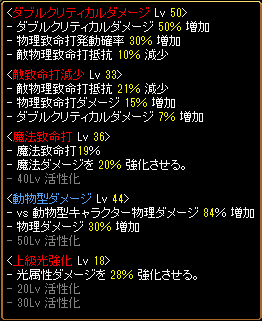
変更点は【動物ダメージ】です。
この子を追加すると他のバランスが崩れてちょっと気持ち悪いのですけど・・・
今後綺麗に整えたいなって所です。
変更箇所
この二つを頑張ってやりました！2パンになったのはこのおかげです！
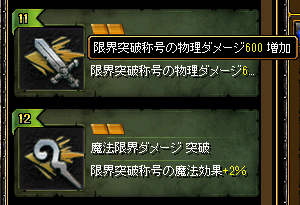
超越
ごくごく普通です！もう一つ入るなら魔力吸収を入れます。
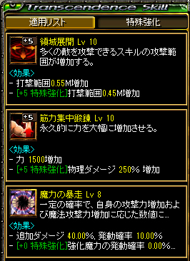
以上、私の装備でした！
OPは異次元ないので揃えやすいのかなって思います！
また何か思いついたら更新します( ・∇・)
2024年7月8日更新↓
限界突破改変まで待機中です。
2024年6月物理改変により厳しい時代に突入
以前より弱くなったということをご理解ください。
⚠️ 物理改変前の私が書きました ⚠️

まず私は1570レベルまで光奏師でしたが、いまは獣人に転職して良かった！！ と、心から思うくらいに獣人はぶっ飛んでいる職業だと思います！！ 獣人に心を売ったら不思議 なにも怖くなくなりましたぁ〜( ・∇・) 装備はふぃ〜りんぐで決めてます。伸び代しかないです。 極めるとことをもたくさんあるけどそれでも強いカモ…🦆
覚醒
まず、レベル300になったら覚醒ですね！
一番上の覚醒【イリュージョナリーアサルター】を選びます！
【専用パッシブ:高貴なる野性】が強いです！
イリュージョナリーアサルターに必要なスキルを全て取得したら、他のスキルを強化しましょう！


【2枚目写真】にある４番目のアンビートツインフレームが主要スキルになります。
このアンビートツインストームがめちゃ強です！
必要スキル
【必要スキル】を説明していきます。基本的に使うのは【アンビートツインフレーム】と【トレースアクロス】と【シャドウオーバーステップ】になります！


【アンビートツインフレーム】は範囲用。
【トレースアクロス】は単体用。
【シャードオーバ】は、右クリックで突進用です。
パッシブスキル
パッシブスキルは合計130で最大値になるのでスキル振りは調整してOKです！
【アンビートツインフレーム】はスキル1＋124で×6本になるのでこれも覚えるのが大事です！
スキル配置

右に【シャドウオーバーステップ】
左下に【アンビートツインフレーム】で楽に狩ができます☺️
狩り風景
クリーチャー
クリーチャーは結構大事ですね。ここを揃えるまでは理想の火力が出ないかもしれません。
基本的に必要なのが、
・ダブルクリティカル【50】
・致命打減少【50】
必要に応じて
・魔法致命打
・経験値上級
・経験値
・光低下・光強化
で、揃えてくといいと思います！
私は魔法致命打は装備で足りているので経験値を優先したり光弱化を優先したり狩場によって変えています
装備構成
| 光強化 | 400％ |
|---|---|
| 光弱化 | 120％ |
| 職業ごとの付属上限はこれはどの職でも同じですよね！ 目指していくといいです！ |
|
| 図案書 |
2024アプデートにより図案書の強さが変わりました。 勇気を1段階を5箇所 / [恩寵の]セットオプション4セット / 一角獣5段階を2セット(魔法ダメージ20%UP) 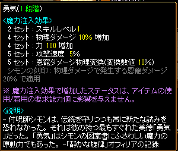 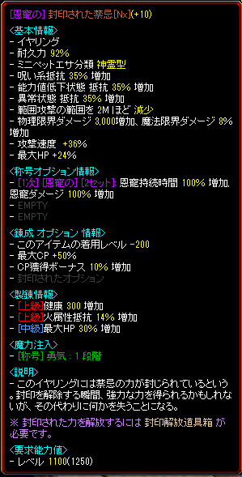 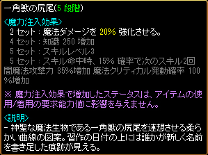 |
| クレスト | 致命打減少・ダブクリのデュアル×3 |
| 超越 | 領域展開・暴走・魔力吸収・知識集中or力 |
| 攻撃速度 | 武器1.60【526～】 最終武器となる、金銀双星→コラプテッド・フォース・ライトツインサーベルも 1.60なので526を目指すといいです。体感としては、4フレも3フレもあまり変わりません！ あっ早くなったワ〜( ・∇・) みたいな感じです。 |
{kind=link}
{kind=link}
獣人は特殊なので魔法攻撃も乗ります!!
よくわかりませんが( ・∇・)
あ、でも、知識は乗りません。
オレンジのダメージは光強化弱化魔法弱化強化によるものです。
これは魔法致命打が100なのでオレンジになってますが、
魔法致命打じゃない場合は黄色です！
後は、物理なので普通に、
致命打減少とダブルクリティカルを極めます!!
普通の物理と違って魔法致命打または魔法強打を極めるといいですね
ちなみに私はなにも考えたくないので魔法致命打の普通の獣人です( ◠‿◠ )
【魔法攻撃力強化】の上限は400%
【魔法攻撃力弱化】の上限は120%
さて、獣人はループしやすい〜〜みたいなお話ありますよね
わたしも最近ループを経験しました。
ウポ補助武器の入れ替えでなんとかなるレベルなので気にしてません！
旗バフでループしちゃうしちゃわないフィールドによって変わってくるので、
ブローチやウポ補助で調整するのがおすすめです!!
これ以上強くなりたい場合は、【ファーストステップ】【魔法限界ダメ積みまくる】のがいいです！
現実的な装備の話
| 補助武器 | 1350以下は、光強化・弱化ブローチ 1350以上は、ウポ補助ガチャ!! |
|---|---|
| 首 | 哲学者 魔法致命打も最終ダメージも稼げげていい感じです!! 強打型にはむいてないかも。 低レベルだと協会首か雷音！！ |
| 頭 | 予知 予知最強!!極めたら先人?? 低レベルだと協会の頭がおすすめ！  |
| 耳 | 獣人は女の子なのでイヤリングが使えます!! ブライトレッドイヤリング[Nx] スターウェーブ 低レベルだと協会(ry |
| 腰 | 遺物を入れます!! ヘクターの誇り 低レベルだと協会(ry |
| 手 | 栄光の手袋でいい！ ウェポンブレイカー、超新星が高級かも。 低レベルだと協会(ry |
| 鎧 | カスタムオーダー！鎧はカスタムオーダーでいい🙆 低レベルだと協会(ry か落ちてる鎧を着ましょう |
| 足 | マナウォーカ、ピンクシューズ 低レベルだと協会(ry か落ちてる足を履いてください 足は魔法弱化を稼げるので、パズルして 決めてくと良い🙆 |
獣人は装備が揃ってない状態でもある程度の火力は出せたので難易度は低めだと思います!!
クリーチャもない状態で暁は狩れました!!
大事なのは、バランスなので手持ちと相談するといいです!!
知識よりでも強いし物理よりでも強い。
白ダメがでるな〜って思ったら敏捷ふると良いです🙆
以上、獣人育成でした！
またなにかお思いついたら追記していきます!!
この記事を書いた人
B鯖 dokuringo
- 1550レベルまで光奏師で、獣人に転生したひと。
獣人の詳しい事は分からないですが、育成方法を書いていきたいと思います！